How the suite fits together: the CLI, the workflows and the task ss:* commands that call it, the toolchain, and the inner and outer loops the checks run in. This site's own pieces are here too, as the reference install.
Notation: C4 (Context + Container).
Routes
| When you are… | Do this |
|---|---|
choosing or changing a project-shape profile (profile: key, --profile), or adding a workflow a profile should drop | Read PROFILES.md for the ui / api / library mapping and its design decisions |
changing how checks report on a PR (slopstopper emit, ss-pr-summary.yml, comment markers) | Read PR_FEEDBACK.md for the one-summary + compact-comment design and why the summary reads GitHub, not the checks |
| asking how adopters get upgraded or their slopstopper issues worked across an organisation, or changing a file, marker or flag the steward reads | Read STEWARD.md for the split with slopstopper-steward and the surfaces it relies on |
Scope
- Static HTML/CSS/JS pages served in production by a Cloudflare Worker with the
[assets]binding. - Local development and DAST use
slopstopper serve(the bundled static server inside slopstopper-cli). - Security headers live in
worker/headers.json. The Worker applies them per path on every response,slopstopper serveapplies the same file locally, and the CSP-drift gate reads it too, so prod and local stay identical.
Project Layout
AGENTS.md carries the top-level layout. What it leaves out:
.github/actions/ # Composite steps the ss-* workflows share (ss-setup, ss-resolve-url, ss-playwright)
.ss/ # SlopStopper-owned, adopter side
├── reports/ # The CLI writes here (.gitignored)
├── .workflows-installed # Manifest of installed workflows (commit this)
└── .installed-from # slopstopper-cli version that wrote the install (commit this)
cli/slopstopper/
├── cli.py # argparse dispatcher + bare-invocation banner
├── output.py # Shared formatters + `--quiet` toggle
├── checks/ # One module per check; `_` modules are shared helpers
├── data/ # Bundled Playwright specs, lighthouserc dev/prod, server.js, profiles.json
└── templates.py / emit.py / discovery.py / config.py / profiles.py
app/ # index, features, tools, feedback (Giscus on click, per-path CSP exception), privacy; shared.css, copy.js, feedback.js
worker/ # index.ts (fetch handler) + headers.json (the canonical header map)
mise.toml # Pins `"pipx:slopstopper-cli"`, `task` and `node`; read locally and by jdx/mise-action
Taskfile.yml # Thin root, `includes: { ss: ./Taskfile.ss.yml }`C4 – Level 1 (System Context)


The diagram as text
flowchart LR
U[User Browser]
A[SlopStopper site]
CF[Cloudflare Workers + Custom Domain]
G[GitHub Repository]
U -->|HTTPS| A
A -->|Served by| CF
G -->|Workers Builds Git integration| CFC4 – Level 2 (Container)


The diagram as text
flowchart LR
B[Browser]
WORKER[Cloudflare Worker\nworker/index.ts]
ASSETS[Static Assets\napp/index.html, app/features.html, app/tools.html, CSS, copy.js]
HJSON[worker/headers.json\ncanonical header map]
DEV[Local Node Server\nslopstopper serve]
B -->|Prod HTTPS requests| WORKER
WORKER -->|env.ASSETS.fetch| ASSETS
HJSON -->|imported by| WORKER
B -->|Local HTTP requests| DEV
DEV --> ASSETS
HJSON -->|loaded by| DEVSingle-route invocation: task ss:*
SlopStopper exposes one canonical entry point for any check: task ss:<category>:<name>. People, agents and CI all run it, so a check is called the same way as everything else in the codebase (task build, task deploy, task lint).
┌─────────────────────────────────────────────────────────────────┐
│ Humans / Agents / CI │
│ │
│ task ss:hygiene:complexity │
│ task ss:reliability:smoke -- http://localhost:8080 │
│ task ss:security:scan │
└────────────────────────┬────────────────────────────────────────┘
│ Taskfile.ss.yml shims
▼
┌─────────────────────────────────────────────────────────────────┐
│ slopstopper-cli (Python, PyPI) │
│ │
│ slopstopper run <category>:<name> [--url URL] [--ci] │
└────────────────────────┬────────────────────────────────────────┘
│ subprocess
▼
┌─────────────────────────────────────────────────────────────────┐
│ External tools (semgrep, lizard, trivy, playwright, zap, ...) │
└─────────────────────────────────────────────────────────────────┘Adopters who don't want Task in their CI pass --no-task to install.sh and get workflows that call the CLI directly, with the same execution path, exit codes and reports. The Task layer is the surface to promote; the CLI is the implementation each shim calls into.
See Taskfile.ss.yml for the shipped shim catalogue.
Toolchain: mise + Task (why both)
SlopStopper deliberately uses two tools with non-overlapping jobs. This is the idiomatic mise+Task split, not redundancy.
| Tool | Job | Where it's defined |
|---|---|---|
| mise | Tool versions. Pins and installs slopstopper-cli, task itself, and node, then activates them per-directory | mise.toml ([tools] "pipx:slopstopper-cli" + task + node) |
| Task | Commands. task ss:<check> is the one command for every check | Taskfile.ss.yml shims |
Why mise owns versions: a normal global install puts one slopstopper binary on PATH, which can't match different repos pinned to different versions, so local runs silently drifted off the pin (CI didn't, because it reinstalls per run). mise keeps every version side-by-side and rewrites PATH per-directory, so the active slopstopper follows the repo. The pin in mise.toml is the single source of truth both local runs and CI (jdx/mise-action) read.
node rides the same mechanism: it's a tool version, so it lives in mise.toml (not .slopstopper.yml) and CI gets it from jdx/mise-action, so there is no separate setup-node step or SLOPSTOPPER_NODE_VERSION repo variable. install.sh seeds node = "20" into an adopter's mise.toml only when they haven't already declared a Node version (mise.toml / .node-version / .nvmrc).
Why Task stays the interface: task ss:<category>:<check> sits alongside an adopter's own task build / task deploy, so the checks are run the way the rest of the repo is rather than through a second tool. mise auto-installs task, so it remains a one-install story. Install mise and everything else flows from mise.toml.
In short: mise installs it (pinned), Task runs it. Moving the CLI pin is install.sh --upgrade-cli / --cli-version (both wrap mise use); see docs/runbooks/UPGRADE_CLI.md.
Development Loops
SlopStopper organises quality feedback into two loops. Together they keep velocity high while keeping quality consistent.
Local Inner Loop
The fast, local cycle a developer (or AI agent) runs before pushing code. Completes in seconds to minutes.


The diagram as text
flowchart LR
A["✏️ Write Code\n(with AI)"] -->|build| B["🔨 Build & Lint\nlocally"]
B -->|verify| C["🧪 Run Tests\nlocally"]
C -->|commit| D["📤 Push / Open PR"]
D -.->|iterate on feedback| AThe push step is backed by an automated gate: install.sh wires a pre-push hook (.githooks/pre-push, via core.hooksPath) that runs the fast static hygiene checks (task ss:hygiene:test) before every push, so the first CI run confirms rather than discovers. It goes through mise exec (git hooks don't source your shell profile) and reuses the same task ss:hygiene:test target that CI runs, so the hook, your terminal and CI run one command. Only the static hygiene checks run in the hook; the server/browser checks (reliability, DAST) stay in the Outer Loop. The installer won't touch an existing hook manager (husky / lefthook / pre-commit) or a custom core.hooksPath; pass --no-hooks to skip it, and git push --no-verify bypasses a single push.
CI/CD Outer Loop
The automated CI/CD pipeline triggered by every push or pull request. Each stage provides deterministic feedback before code reaches production.


The diagram as text
flowchart LR
PR["📤 Push / Open PR"]
SC["🔒 Security\nSAST · DAST · Secrets · CVEs"]
HY["🧹 Hygiene\nComplexity · Docs"]
RE["✅ Reliability\nE2E · Smoke · A11y · CWV"]
DP["🚀 Deploy\nPreview URL"]
FB["💬 Feedback\nto Developer"]
PR --> SC
SC --> HY
HY --> RE
RE --> DP
DP --> FB
FB -.->|fix & iterate| PRHow the Loops Work Together
| Loop | Where | Speed | Triggered by |
|---|---|---|---|
| Inner | Local machine | Seconds – minutes | Developer action |
| Outer | GitHub Actions | Minutes | Push or PR |
When the outer loop flags an issue, the developer re-enters the inner loop to fix it. Because the outer loop is deterministic and runs the same checks the same way every time, developers can trust its feedback and act on it quickly.